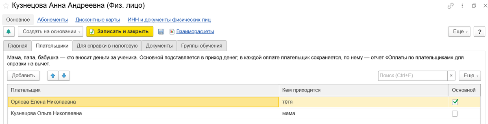
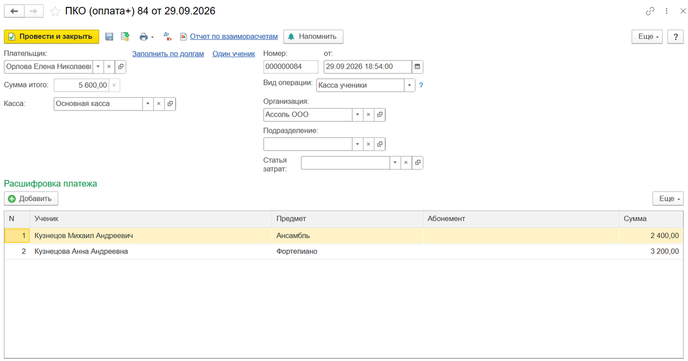
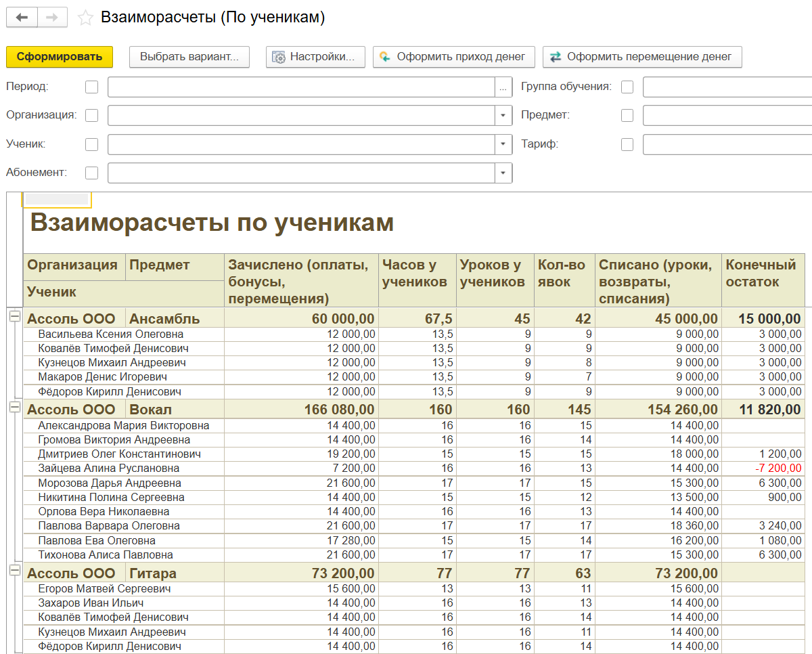

Посещаемость, абонементы и долги детские центры ведут кто в таблицах, кто в отраслевых конфигурациях, кто в доработках к Бухгалтерии или УНФ. Мы делаем для 1С:Бухгалтерии 3.0, 1С:Управления нашей фирмой и 1С:Управления торговлей расширение «Учёт занятий». Оно ведёт учеников и их оплаты, абонементы с заморозкой и списанием занятий по урокам, долги, возвраты и рассылку должникам. После этой статьи в версии 2.1 появилось то, о чём шла речь выше.
Плательщики ученика. В карточке ученика таблица «Плательщики»: кто платит и кем приходится ребёнку. Тётя близнецов записывается рядом с мамой, один из плательщиков отмечен основным и сам подставляется в оплату. В каждом приходе денег записано, кто заплатил именно в этот раз.

Один платёж за нескольких детей. Приход денег расшифровывается по ученикам, предметам и абонементам, как в приходном кассовом ордере типовых конфигураций. Кнопка «Заполнить по долгам» раскладывает сумму по долгам детей этого плательщика. Возврат по умолчанию оформляется тому, кто платил.

Справка для вычета. Документ «Справка об оплате обучения» по форме КНД 1151158. Сумма считается за год по кассе: сколько этот плательщик внёс за этого ученика минус возвраты. Номер за год ставится сам, есть корректирующая и аннулирующая справка. Без лицензии на образовательную деятельность справку не выдать (кроме ИП, который ведёт занятия лично). Без ИНН или документа налогоплательщика, а также при нулевой сумме её тоже не выдать — программа говорит об этом прямо. ИНН и паспортные данные плательщика лежат на отдельной странице карточки, педагог их не видит. Сведения в налоговую электронно расширение пока не передаёт: справка печатается на бланке.
Договор обучения с номером и датой — на основании ученика или абонемента. С лицензией он называется договором об оказании платных образовательных услуг, без неё — договором возмездного оказания услуг по обучению. Текст договора — нейтральный шаблон, его стоит проверить со своим юристом.
Кассовых чеков по 54-ФЗ расширение не пробивает: чек за абонемент по-прежнему выбивает ваша касса.
А это взаиморасчёты по ученикам: сколько зачислено, сколько уроков проведено и списано, у кого остаток, а у кого долг. Красная цифра — ровно тот разговор, который администратор не любит вести у стойки. Новый отчёт «Оплаты по плательщикам» отвечает на январский вопрос: кто сколько внёс и вернул за кого за год.

Расскажите в комментариях, как у вас: сколько родителей в январе просят справку, часто ли платят бабушки и как вы делите общие платежи. Это самое полезное дополнение к статье.